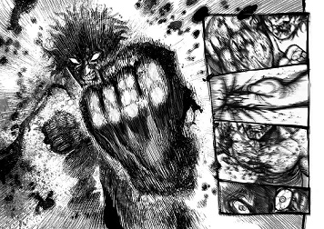

Kengan Asura
Genre: Martial Arts, Action, comedy
Director: Yabako Sandrovich
Aired in Japan
Release Year: 2012
Plot Summary: Since the Edo periods of Japan, gladiator arenas exist in certain areas. In these arenas, wealthy business owners and merchants hire gladiators to fight in unarmed combat where winner takes all. Tokita Ohma, nicknamed "Ashura", joins these arenas and devastates his opponents.
Reasoning: Superb visuals, kinetism in images granting feeling of impacts and awesome characters who keep you busy wondering whats coming next.